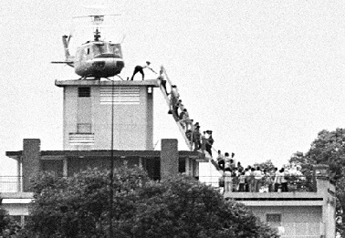

The Fall of Saigon.

The Fall of Saigon was the event that officialized the win of the North Vietnamese in the Vietnam War, a conflict between the american-backed Republic of Vietnam (also known as South Vietnam), and the soviet-supported Democratic Republic of Vietnam (also known as North Vietnam)
The Battles of Fallujah

The battles of Fallujah were important to both the Global War on Terror and the Iraq War, serving as a turning point for what the Iraq War would turn into for the generals at Central Command (CENTCOM). Fallujah held the first two major battles that had insurgents as the main opposing force, not an organized military like Saddam's Iraqi Army. Following the invasion of Iraq and the collapse of the Saddam Regime, the Coalition Provisional Authority, the provisional government that ruled over Iraq during coalition control, disbanded the Army and in local areas, police forces. This would force hundreds of thousands of Iraqis onto the streets, without proper law and order, due to the fact there were no police force and the coalition did not dabble much into keeping basic law and order, militias would begin to form. In Fallujah, coalitionary forces pulled out of Fallujah due to high political pressure, and established a coalition-sanctioned militia called the "Fallujah Brigade", which would act as a form of law enforcement for the city. This brigade would not work, as it would collapse as its militiamen would turn over to other militias, including local insurgency groups. With the collapse of the Fallujah Brigade, these insurgent groups practically had free reign over Fallujah. They would set up Fallujah to be a nightmare for any coalitionary forces, including traps, IEDs, and other ways to make retaking Fallujah a challenging task. With the fall of the Fallujah Brigade, the takeover of Fallujah, and an attack on Blackwater contractors, Central Command would dispatch Regimental Combat Team 1 (RCT-1) and Regimental Combat Team 7 (RCT-7) to retake Fallujah, along with other coalitionary forces like the Scottish Black Watch, and detachments of the Iraqi Security Forces. The Second Battle of Fallujah would last a month, going from November 7th to December 23rd of 2004. This battle would involve the coalitionary forces sweeping through the city and destroying the insurgency in the city, which was challenging due to guerilla-like tactics such as tunnel systems throughout the city. Sadly, this battle only kept out the insurgency from retaining full control for a decade, with ISIS retaking Fallujah in 2014, as the Islamic State expanded throughout the Middle East.